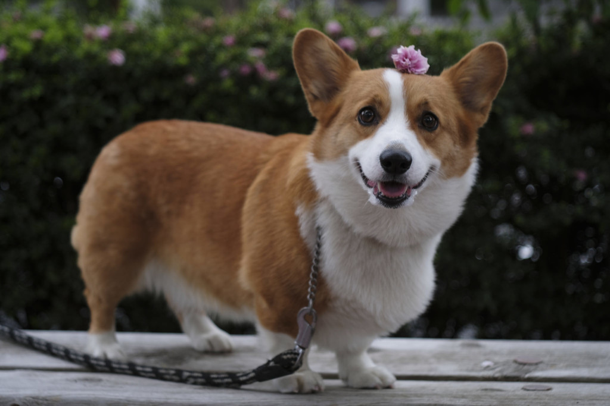

Вельш-коргі-кардиган — невисокий, міцний собака з присадкуватим тулубом. Вони мають пряму, водостійку, коротку або середньої довжини шерсть. Їхній «лисячий» хвіст нагадує пензлик, а голова нагадує голову лисиці. Представники породи більші в довжину, ніж у висоту. Шерсть буває різних кольорів — детальніше див. Стандарт породи. Дорослий коргі-кардиган має зріст близько 30 см і важить 15–18 кг.
ГОЛОВНА
